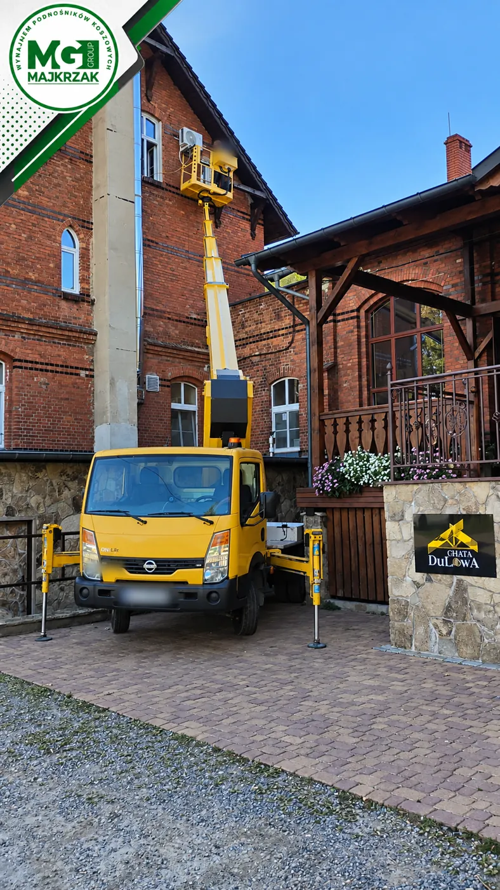
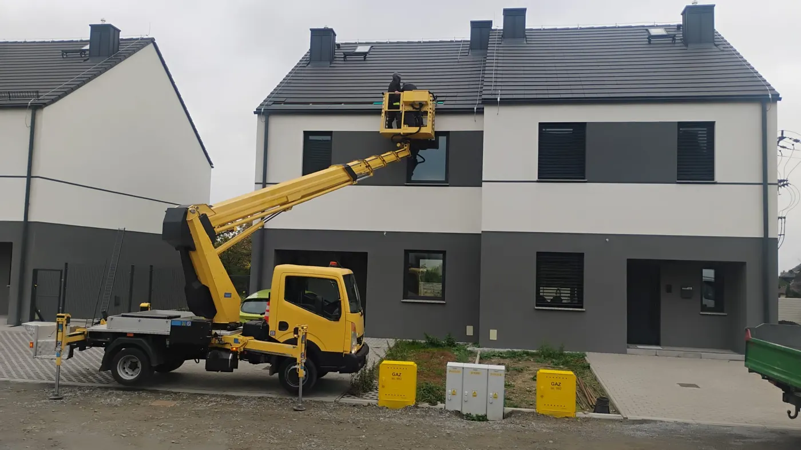
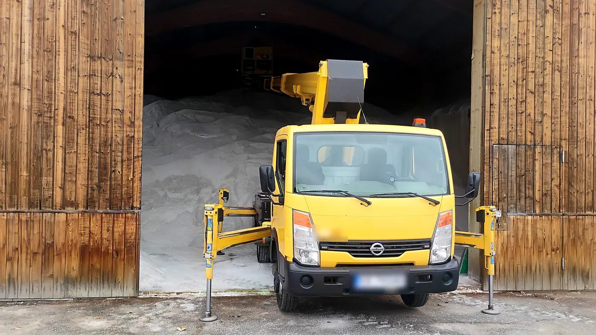
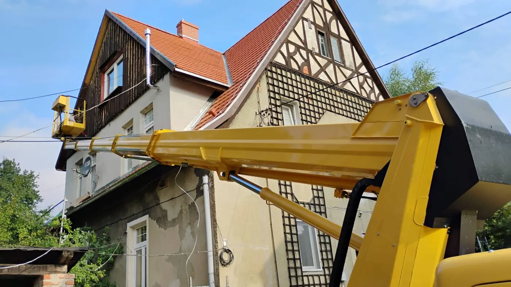

Bielawa4Wrzesień 2026
Montaż klimatyzacji na ceglanej kamienicy
Jednostka zewnętrzna wysoko na ścianie, a dojazd wąski jak korytarz. Podnośnik stanął centymetry od słupa i zrobił swoje.
Zobacz zdjęcia →Potrzebujesz dostać się wysoko, ale nie chcesz stawiać rusztowania ani wchodzić na drabinę? Przyjedziemy podnośnikiem koszowym o wysokości roboczej 27 m i zrobimy to razem z Tobą, szybko i bezpiecznie.
Nasz podnośnik stoi na podwoziu do 3,5 t, dlatego wjedzie na podwórko, wąską uliczkę czy osiedlowy parking, gdzie duży dźwig się nie zmieści. Pracujemy dla domów, firm, sklepów, wspólnot mieszkaniowych i gmin z Bielawy i okolic.
Zobacz podnośnik i cennikLiście i błoto z rynien usuwamy z kosza, bez wchodzenia na dach.
Zimą zbijamy sople i nawisy śnieżne, zanim spadną na ludzi lub auta.
Montaż i demontaż banerów, szyldów i reklam na elewacjach i słupach.
Wieszamy i zdejmujemy lampki na drzewach, budynkach i latarniach.
Drobne naprawy dachu, obróbek i kominów oraz ich przegląd z bliska.
Mycie elewacji i wysokich okien, malowanie i drobne remonty.
Montaż kamer, lamp i anten na wysokości, także dla elektryków.
Przycinanie gałęzi nad dachem, przy liniach i ogrodzeniu.
Wsparcie ekip budowlanych, dekarskich i elektrycznych na wysokości.
Podnośnik zawsze wynajmujemy z naszym operatorem. Ty mówisz, co trzeba zrobić, a my ustawiamy kosz tam, gdzie trzeba. Zmienne podparcie pozwala pracować nawet w ciasnym miejscu.
Zobacz, gdzie już pracował nasz podnośnik. Kliknij zlecenie, żeby obejrzeć wszystkie zdjęcia.

Bielawa4Jednostka zewnętrzna wysoko na ścianie, a dojazd wąski jak korytarz. Podnośnik stanął centymetry od słupa i zrobił swoje.
Zobacz zdjęcia →
Miejscowość ?1Kosz podjechał pod samą krawędź dachu nowych domów. Bez rusztowania i bez wchodzenia na dach.
Zobacz zdjęcia →
Jordanów Śląski8Wymiana instalacji przy dachach i w środku hal. Mały gabaryt pozwolił wjechać tam, gdzie zwyżka na ciężarówce by się nie zmieściła.
Zobacz zdjęcia →
Miejscowość ?1Wysięgnik nad podwórkiem i kosz pod samym dachem. Wysoka, stara zabudowa to dla nas żaden problem.
Zobacz zdjęcia →Zadzwoń, ustalimy termin i dojedziemy na miejsce.
📞 505 856 334Pracowaliśmy dla Ciebie? Zostaw nam krótką opinię w Google, bardzo nam to pomaga.
Bazę mamy w Bielawie. Dojeżdżamy do klientów w promieniu ok. 50 km, a dalej po wcześniejszym ustaleniu. Im bliżej, tym niższy koszt dojazdu.
Nie. Podnośnik zawsze obsługuje nasz doświadczony operator z uprawnieniami. Dzięki temu praca jest bezpieczna, a Ty nie potrzebujesz żadnych uprawnień.
Płacisz za dojazd i za każdą godzinę pracy. Dokładne stawki i kalkulator znajdziesz w cenniku.
Najczęściej tak. To podnośnik na podwoziu do 3,5 t, mniejszy niż typowe zwyżki na ciężarówkach. Wyślij zdjęcie wjazdu, a powiemy od razu.
Zwykle w ciągu kilku dni. W pilnych sprawach, np. po wichurze albo przy groźnych soplach, staramy się przyjechać jak najszybciej.
Zadzwoń albo wyślij SMS. Napisz, co trzeba zrobić i gdzie.